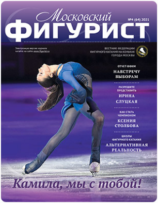
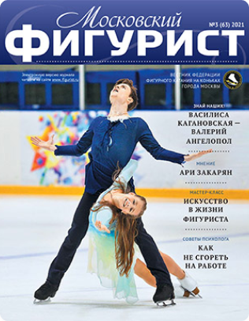
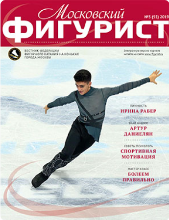
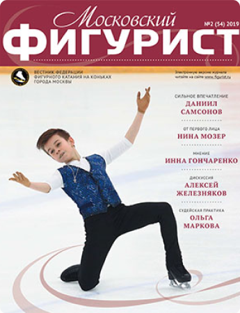

Бюллетень выходит раз в квартал и распространяется
бесплатно. «Московский Фигурист» можно получить в Дирекции
Федерации по предварительной заявке при наличии
необходимого количества экземпляров.
Журнал «Московский фигурист» с января 2013 года имеет свой
собственный сайт
www.mosfigurist.ru ,
на котором теперь можно найти и прочитать любые статьи,
которые были опубликованы в нашем печатном издании. Больше
не надо скачивать журнл в формате pdf, чтобы подробнее
ознакомиться с материалами журнала. На сайте мы
постарались сделать удобную систему поиска статей по
интересующей вас тематике. Также вы можете оставить
комментарии, в которых можно задать вопросы авторам
статей, высказать свое мнение по поводу прочитанного и
предложить новые темы для будущих статей по интересующим
вас вопросам.
С уважением, редакция журнала «Московский фигурист»

«Московский фигурист» №4 (64) 2021
Отчет ФФКМ
Отчет Федерации за 4 года по всем направлениям
деятельности.
Разрешите представить
Интервью с Ириной Слуцкой о ее спортивной и после
спортивной жизни.
Как стать Олимпийским чемпионом
Интервью с олимпийской чемпионкой Ксенией Столбовой о
ее пути к вершине.
Школы фигурного катания
Статья про московский клуб «Армия фигурного катания»,
который работает по стандартам школы олимпийского
резерва.

«Московский фигурист» №3 (63) 2021
Миссия выполнима
Интервью с перспективными фигуристами СШОР «Москвич»,
которые получили в группе Виктории Волчковой второй
шанс на успех.
Отличительная черта
Экспертная статья Ольги Марковой о тонкостях определения уровней сложности, подготовленная на основе проведенного вебинара для московских тренеров.
Art-подготовка
Интервью с молодым, но уже очень популярным хореографом-постановщиком программ Никитой Михайловым.
Спорт без травм

«Московский фигурист» №3 (55) 2019
Отчет ФФКМ
Отчет Федерации за 4 года по всем направлениям
деятельности.
Разрешите представить
Интервью с Ириной Слуцкой о ее спортивной и после
спортивной жизни.
Как стать Олимпийским чемпионом
Интервью с олимпийской чемпионкой Ксенией Столбовой о
ее пути к вершине.
Школы фигурного катания
Статья про московский клуб «Армия фигурного катания»,
который работает по стандартам школы олимпийского
резерва.

«Московский фигурист» №3 (63) 2021
Миссия выполнима
Интервью с перспективными фигуристами СШОР «Москвич»,
которые получили в группе Виктории Волчковой второй
шанс на успех.
Отличительная черта
Экспертная статья Ольги Марковой о тонкостях определения уровней сложности, подготовленная на основе проведенного вебинара для московских тренеров.
Art-подготовка
Интервью с молодым, но уже очень популярным хореографом-постановщиком программ Никитой Михайловым.
Спорт без травм
День рождения Камилы Валиевой
Олимпийская чемпионка в командном соревновании,
чемпионка Европы